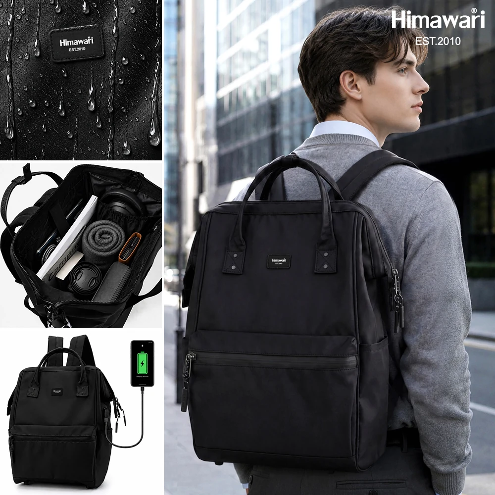
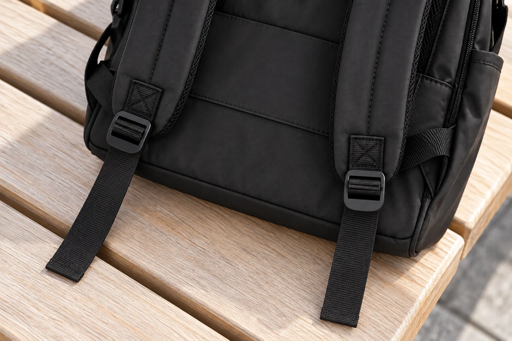

백팩 길이를 맞춘 뒤 남는 끈 끝, 내려놓을 때 어디에 둘까
백팩을 몸에 맞게 조절하고 나면 버클 아래에 납작한 끈 끝이 남습니다. 어깨에 메고 서 있을 때는 신경 쓰이지 않다가 가방을 손으로 들거나 의자 옆에 놓는 순간 눈에 들어오기도 합니다. 이 끝을 짧게 보이게 하려고 어깨끈을 다시 풀면 이미 맞춘 착용 길이까지 달라집니다. 먼저 구분할 것은 몸을 감싸는 끈의 길이와 조절 버클을 지나 남은 끝부분입니다.
히마와리 No.1884의 실제 뒷면 사진에서도 쿠션이 있는 어깨끈, 아래쪽 조절 버클, 버클 뒤로 이어지는 납작한 끈을 구별할 수 있습니다. 여기서 참고하는 모델의 외부 크기는 가로 30, 세로 45, 폭 20cm입니다. 가방의 크기와 별개로 남는 끈 길이는 사용자가 맞춘 상태에 따라 달라질 수 있습니다. 사진에 보이는 길이를 그대로 따라 만드는 것이 이 글의 목적은 아닙니다.
사무실에 도착해 손잡이를 잡는 순간
백팩을 벗고 위쪽 손잡이를 잡으면 바닥이 몸에서 떨어지고 어깨끈은 아래로 늘어집니다. 이때 먼저 보는 것은 끝부분 하나가 아니라 어깨끈 전체가 향하는 방향입니다. 길게 만들어진 고리와 짧은 끈 끝이 겹쳐 있으면 어느 부분이 흔들리는지 구분하기 어렵습니다. 가방을 안정된 자리에 두고 쿠션 끈부터 자연스럽게 펼쳐보면 버클과 끝을 따로 찾을 수 있습니다.
손으로 짧게 옮길 때에는 실제 손잡이를 잡고 끈 끝이 바닥 쪽으로 남는지 봅니다. 남은 끝을 가방 무게를 받치는 손잡이처럼 잡아 옮기지는 않습니다. 어깨끈을 정리하려고 다른 쪽 지퍼 손잡이에 묶는 방식도 피하는 편이 좋습니다. 여밈 부품과 착용 끈을 연결하면 다음에 지퍼를 열거나 다시 멜 때 풀어야 할 일이 늘고, 본래 사용과 다른 힘이 걸릴 수 있기 때문입니다.
복도를 조금 걸어갈 때와 오래 손에 들고 이동할 때는 끈을 다룰 여유가 다릅니다. 잠깐 책상 아래로 옮기는 상황이라면 내려놓을 자리에서 어깨끈과 끝을 함께 정돈하면 됩니다. 손으로 드는 시간이 길어 끈이 계속 거슬린다면 가방에 안내된 정리 방식이 있는지 살필 이유가 생깁니다. 그때도 어깨에 맞춘 길이를 먼저 바꾸기보다 무엇이 밖으로 늘어지는지 구분한 상태에서 방법을 고릅니다.

의자 옆에서는 끈을 둘 면부터 고르기
백팩을 의자 옆 바닥에 세워둘 때는 등판 쪽에 어깨끈이 자연스럽게 놓일 공간이 필요합니다. 가방의 앞면만 책상 다리에 맞추면 뒤의 고리와 끈 끝이 통로로 남을 수 있습니다. 바닥이 평평하고 통행을 막지 않는 자리를 고른 뒤, 끈을 가방 가까운 쪽으로 모아둡니다. 모아놓았다는 사실이 고정되었다는 뜻은 아니므로 다시 움직일 때에는 위치를 봅니다.
의자 위에 잠시 올려두는 경우에는 끈이 좌판 가장자리 아래로 늘어졌는지 확인할 수 있습니다. 앉거나 의자를 움직이기 전에 가방을 다른 자리로 옮겨야 한다면 손잡이부터 잡고 끈이 어느 쪽에 남았는지 봅니다. 끈 끝만 안쪽으로 밀어두고 큰 어깨끈 고리는 그대로 두면 정리한 것처럼 보여도 같은 상황이 반복될 수 있습니다. 백팩 전체를 옮기는 동작에 맞춰 끈의 자리도 함께 바뀌어야 합니다.
선반이나 보관함에서는 문이 닫히는 면을 한 번 더 봅니다. 백팩 본체가 들어갔더라도 납작한 끈 끝 하나가 문 바깥으로 남을 수 있습니다. 본체를 밀어 넣는 손과 끈을 안쪽으로 모으는 손의 동작을 나누면 어느 부분이 밖에 있는지 확인하기 쉽습니다. 문으로 끈을 눌러 고정하는 방법을 보관 방식으로 삼지는 않습니다. 수납할 자리 안에 가방과 끈이 모두 놓이도록 정돈하는 쪽으로 생각합니다.

정리띠가 보이지 않는 가방에서 임의로 만들지 않을 것
모든 백팩에 끈 끝을 말아 고정하는 띠나 고리가 있는 것은 아닙니다. No.1884에서 확인한 사진만으로 별도 끈 정리 부속이 포함된다고 소개할 수는 없습니다. 작은 고리가 사진에 보이더라도 어느 부품인지 확인하지 않은 채 끈 끝을 끼우는 용도로 사용하지 않습니다. 제품에 제공된 방식이 있다면 그 안내를 따르고, 없다면 일반적인 보관 정돈과 부속품을 추가하는 선택을 나누어 봅니다.
별도의 정리띠를 생각한다면 가방끈의 실제 폭과 두께, 버클 위치를 먼저 확인해야 합니다. 외부 가방 폭 30cm라는 수치는 이 판단에 쓸 끈 폭이 아닙니다. 정리 부품이 조절 버클을 가리거나 쿠션 끈이 접히는 위치에 닿으면 다시 길이를 바꿀 때 번거로울 수 있습니다. 구입 전에는 고정 방식과 풀어내는 방법이 자신의 끈 구조에 맞는지 확인하고, 부속이 더해진 뒤에도 버클을 사용할 수 있는지 살펴봅니다.
남은 끝을 조절 버클의 빈틈에 임의로 한 번 더 통과시키는 방법은 제품의 원래 끼움 순서를 바꿀 수 있습니다. 끝이 짧아 보인다는 이유로 그 방식을 택하기보다 현재 버클에 끈이 어떻게 지나가는지 그대로 남겨둡니다. 끝을 잘라 길이를 없애는 방법도 나중에 겉옷이나 사용자가 바뀌었을 때 조절 여유를 되돌리기 어렵습니다. 정돈의 목적은 모양을 짧게 만드는 데 그치지 않고 원래의 조절 기능을 계속 쓸 수 있게 두는 데 있습니다.
다시 멜 때는 접은 끝보다 원래 길이를 먼저 확인하기
가방을 다시 꺼내면 어깨끈의 고리가 겹쳤는지, 버클이 뒤집혔는지, 모아둔 끝이 어디에 놓였는지 순서대로 볼 수 있습니다. 보관하면서 끈을 접어두었다면 메기 전에 원래 방향으로 펼칩니다. 어깨에 닿는 면이 평평한지 확인하고 양쪽 끈을 건 뒤, 끝을 정리하는 과정에서 착용 길이까지 바뀌지 않았는지 살펴보세요. 길이가 달라졌다면 끝을 당겨 숨기기 전에 조절 상태부터 다시 맞춥니다.
이때 양쪽에 남은 끝 길이를 무조건 똑같이 만들 필요는 없습니다. 무엇을 어느 위치에서 잰 것인지 다를 수 있고 실제로 편한 착용 상태도 직접 확인해야 합니다. 끝의 모양을 맞추려고 버클을 계속 움직이면 처음에 구분했던 두 문제가 다시 섞입니다. 몸에 맞는 길이를 정하는 일은 착용 상태에서, 남는 부분을 둘 자리를 정하는 일은 보관과 이동 동작에서 각각 판단하면 됩니다.
백팩을 벗고 손잡이로 옮기고 내려놓았다가 다시 메는 한 번의 흐름을 생각해보세요. 그 사이 끈 끝이 거슬리는 순간이 한 곳뿐이라면 그 자리의 놓는 방향만 바꿔도 됩니다. 매번 새 부속이나 새로운 묶는 법을 찾을 필요는 없습니다. 자신에게 맞춘 어깨끈 길이는 유지하고, 가방을 두는 면과 끈이 남는 방향을 함께 정해두는 것이 다음 사용에도 이어질 수 있는 관리 방법입니다.